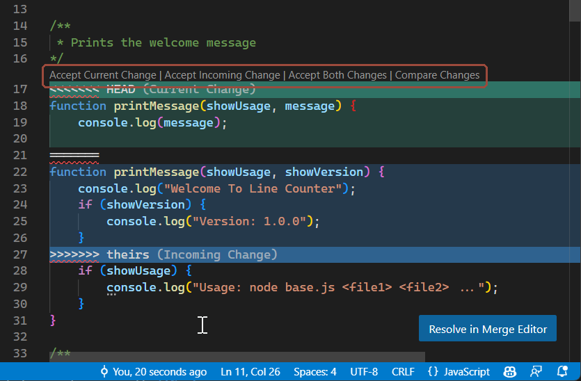

3Contributing
3.1The map — where your work travels
Everything Git does makes sense once you hold one picture in your head. There are two copies of the repository — GitHub's and yours — and each holds a main plus your branch. Your computer adds one extra stop, the staging area. Six commands move work between these places, and that's the whole system.
main and your branch. Work flows clockwise: git add and git commit happen entirely on your computer; git push publishes your commits to your branch on GitHub; the pull request merges them into the shared main after review; git pull brings everyone's merged work back down into your files. git fetch is pull's look-don't-touch half — notice its arrow stops at your computer's edge: it updates what your computer knows about GitHub without changing any file you see.| Command | What moves | From → to |
|---|---|---|
| git add | The edit you just made | working files → staging area |
| git commit | The whole shortlist, sealed as one snapshot | staging area → your branch (your computer) |
| git push | Your new commits | your branch (computer) → your branch (GitHub) |
| git fetch | News only — what changed on GitHub. None of your files change | GitHub → your computer's knowledge |
| git pull | The changes themselves (a fetch, then a merge) | main (GitHub) → your files |
| pull request + merge | Your branch's commits, after Charles reviews | your branch → main (both on GitHub) |
Notice there is no arrow from your computer straight into the shared main — that lane doesn't exist. A direct push to main is automatically reverted by a guard bot minutes later (with an issue filed); changes land there only through the pull-request lane on the right.
3.2Adding notes, start to finish
Say lecture 3 of PHM5001 just happened and you want to share your notes. Six moves — and if you finished Setup Step 7, you've already done every one of them once.
First time here? Do the one-time Setup first. Fixing a typo? You need none of this — the web editor (§1.2) does the branch and PR for you, in the browser.
- Branch. Click
mainin the bottom-left corner of VS Code → + Create new branch… →yourusername/phm5001-lecture-3. It must start with your GitHub username, and you get one open branch at a time — a bot deletes rule-breakers (click-by-click: Setup 7a–7b). - Write. Create the file in the right folder —
PHM5001/notes/lecture-03-<topic>.md(folder map and naming: §1.3; what a good note looks like: §4). Save. - Commit your stuff. Source Control panel → + next to your files (stage) → short message → ✓ Commit.
- Pull before you push — always. In the terminal:
git pull origin main. Your commit is safe; this weaves in whatever coursemates merged while you were writing. If it saysCONFLICT, that's §3.4 — a two-click fix, not a crisis. - Push. Click Sync Changes (or
git push). - Pull request. On GitHub: Compare & pull request → Create pull request → WhatsApp Charles the link. The red ✗ on the PR approval check just means “awaiting review”. After the merge: click Delete branch on the PR page (frees your one-branch slot), switch back to
mainin VS Code, and pull.
The whole lap in the terminal
git checkout main
git pull
git checkout -b yourusername/phm5001-lecture-3
# … write the note, save …
git add .
git commit -m "PHM5001: lecture 3 notes"
git pull origin main
git push -u origin yourusername/phm5001-lecture-33.3Staying current
While your branch lives, other people's PRs keep merging into the shared main. Pull daily — and always right before you push (move 4 above): click the sync icon in the status bar, or
git pull origin mainSkip it for a week and the differences pile up — and arrive all at once, as conflicts, on the day you finally open your PR.
3.4Merge conflicts
A conflict happens when two branches edit the same lines of the same file. Git merges everything else automatically — it just won't guess between two versions of one sentence, so it stops and asks you. VS Code turns the question into buttons:

- For each highlighted block, click the right button — or hand-edit the line if the truth is a mix of both versions. (Under the buttons, Git has simply written both versions into the file between
<<<<<<<and>>>>>>>markers; the buttons pick which lines survive.) - Save the file.
- Source Control → Commit (the message is pre-filled) → Sync Changes.
If a conflict is bigger than a few lines and you're not sure what the other person meant, ask them — in the PR or the group chat. Guessing wrong and merging it is worse than leaving it open for a day.
3.5Your personal/ folder
Every module has a personal/ folder that Git ignores completely. Nothing inside it — other than its own README — can be committed, pushed, or accidentally shared, no matter what you do.
Use it for drafts, half-formed notes, or annotations you're not ready — or don't want — to share. When something in there is ready for main, copy the finished version into notes/ and commit that copy.
3.6Common situations
SituationI started editing directly on main by mistake
git switch -c yourusername/short-topicThis moves your uncommitted changes onto a brand-new branch and leaves main untouched. Commit from there as normal.
SituationI have uncommitted changes but need to pull the latest main
git stash
git pull origin main
git stash popstash sets your changes aside temporarily; pop brings them back on top of the branch you just updated.
SituationGitHub says my PR has a conflict, but I don't see one locally
Your branch is behind main on GitHub even though it's current on your machine. Run git pull origin main (§3.3), resolve anything that surfaces (§3.4), then push again.
SituationI want to undo my last commit, but keep the changes
git reset --soft HEAD~1This uncommits without discarding any edits — they go back to being staged, ready to redo. Only use this if you haven't pushed that commit yet.
SituationI pushed something I didn't mean to share
Move the content into personal/, commit its removal from the tracked location, and push. If it's sensitive rather than just unfinished, say so in the PR or message Charles directly — a removed file is still visible in the repo's history.